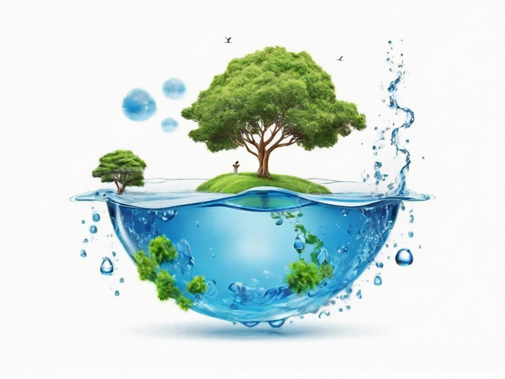
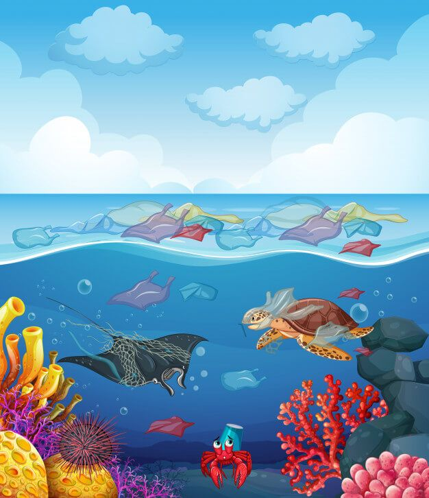
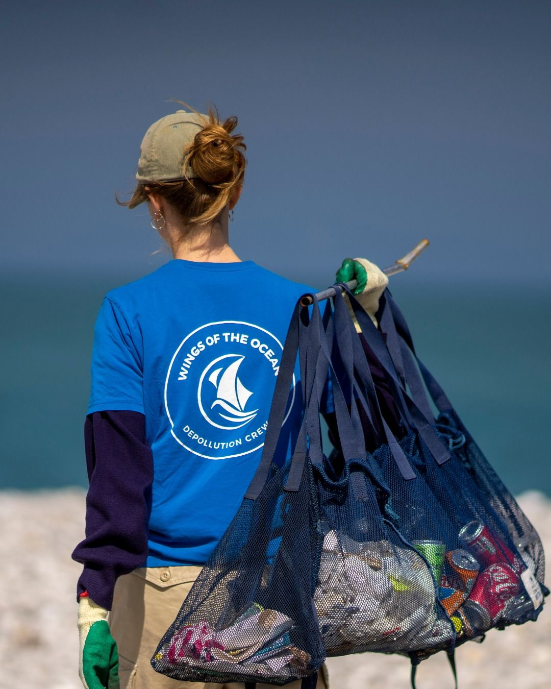
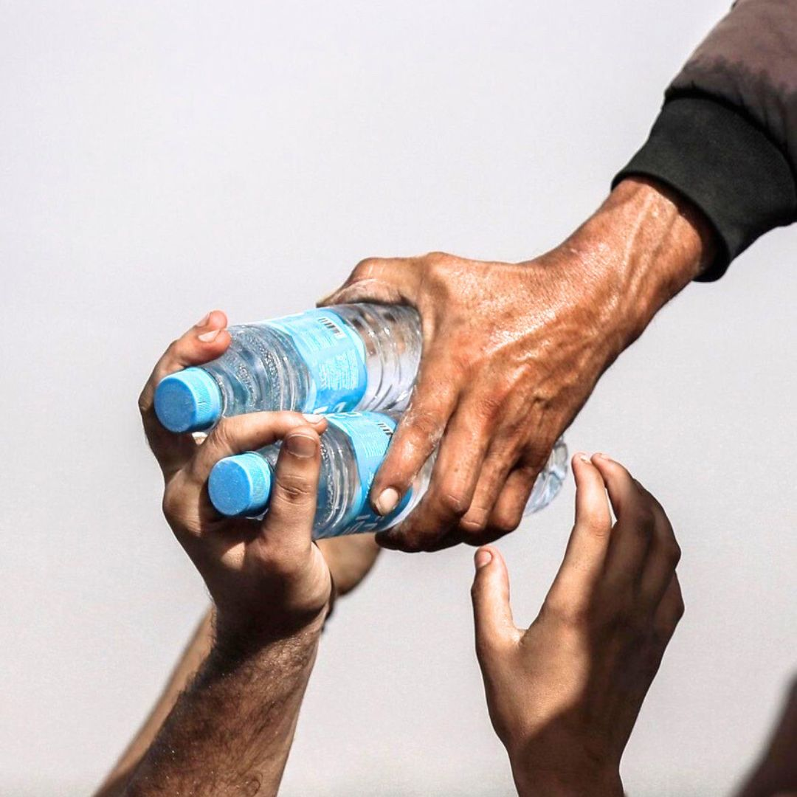
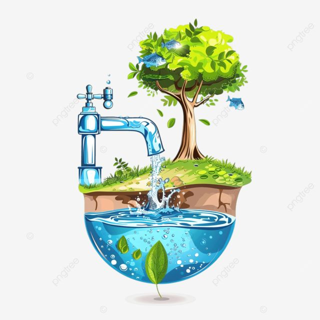
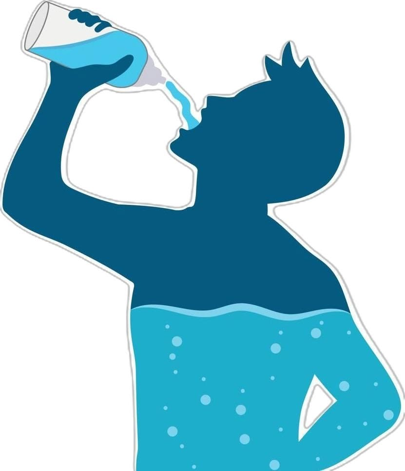
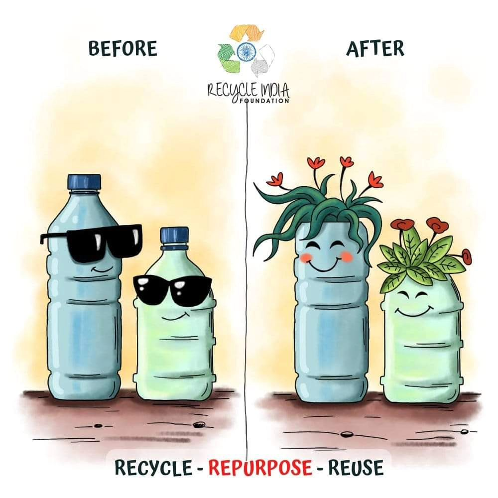
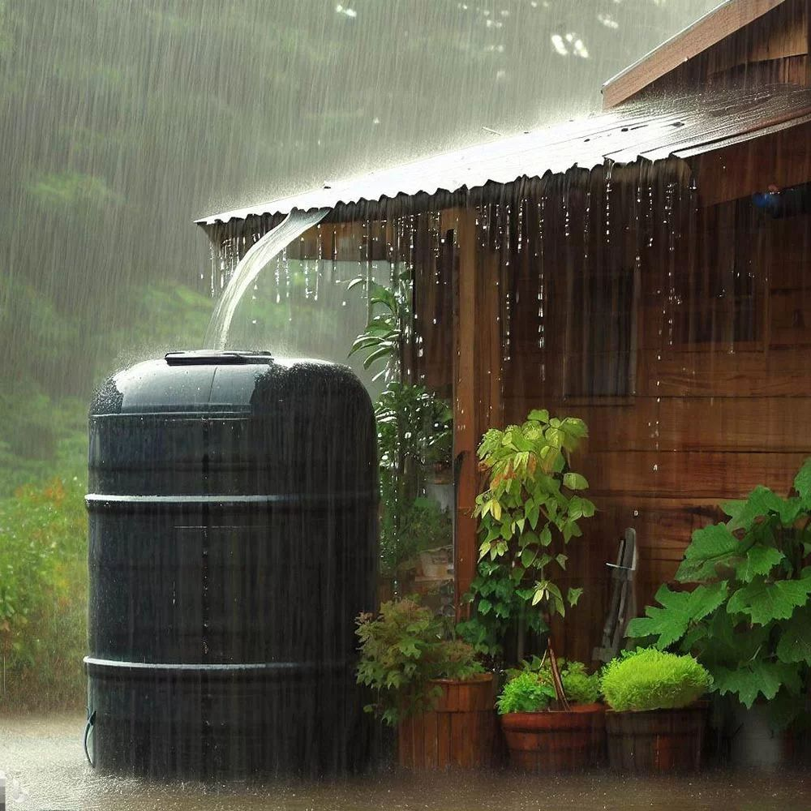
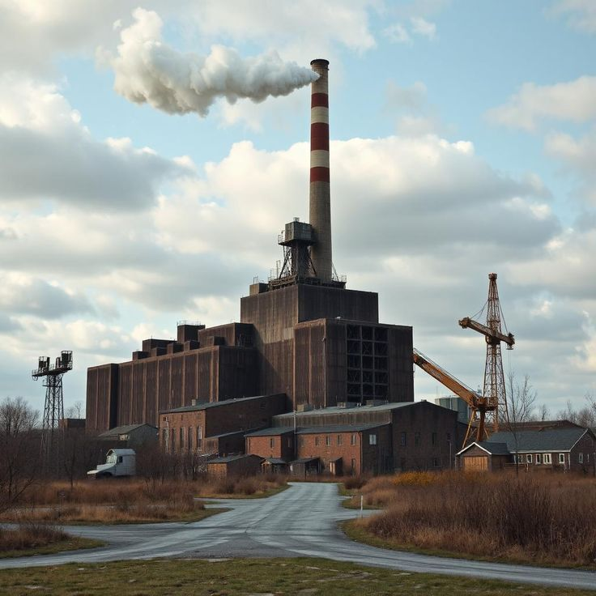
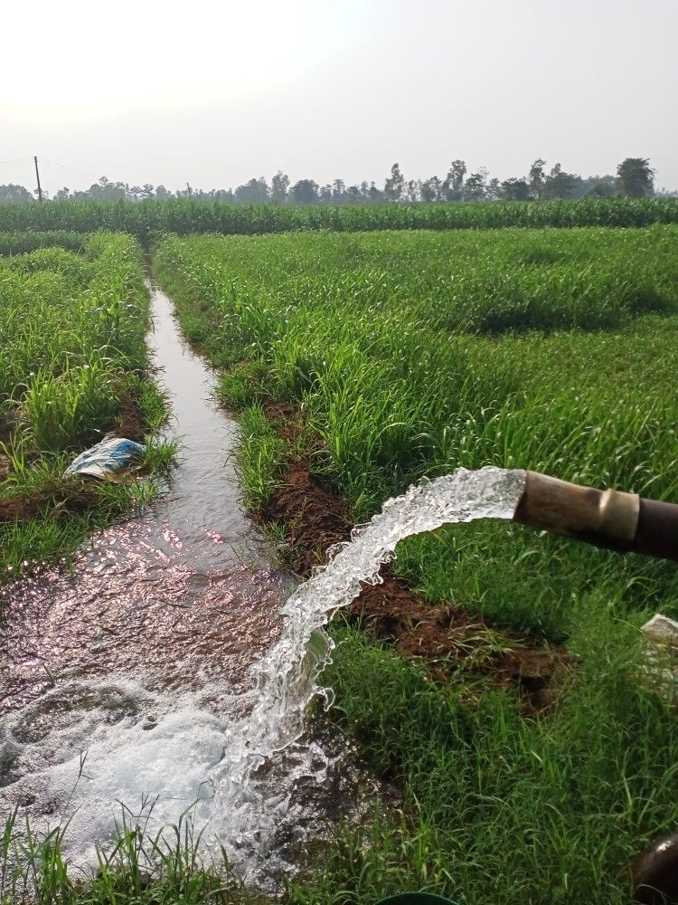

Importance of Water Reuse
Water reuse reduces freshwater use and helps solve water shortage problems.

Conserving water means using water carefully so it is not wasted. It helps ensure enough clean water for the future.

Protecting the environment means keeping nature clean, reducing pollution and protecting living things.

Supporting the environment means using eco-friendly actions like recycling and green projects.

Saving resources means using water, energy and materials wisely so they do not run out.
Water reuse reduces freshwater use and helps solve water shortage problems.

Water must be treated before reuse.

Water reuse saves clean water and reduces pollution.


Treated water is returned to natural systems like rivers, lakes, and wetlands. This helps maintain ecosystems, supports fish and plants, and keeps natural water cycles balanced.

Water from household activities like washing clothes, bathing, or kitchen use is reused after simple treatment. It can be used for gardening, cleaning floors, or flushing toilets.

Water used in factories is cleaned and reused for cooling machines, washing materials, or other industrial processes. This reduces water costs and limits pollution from factories.

Wastewater is treated and reused for watering crops, rice fields, and plantations. This helps farmers reduce the use of fresh water and is especially useful in dry seasons.